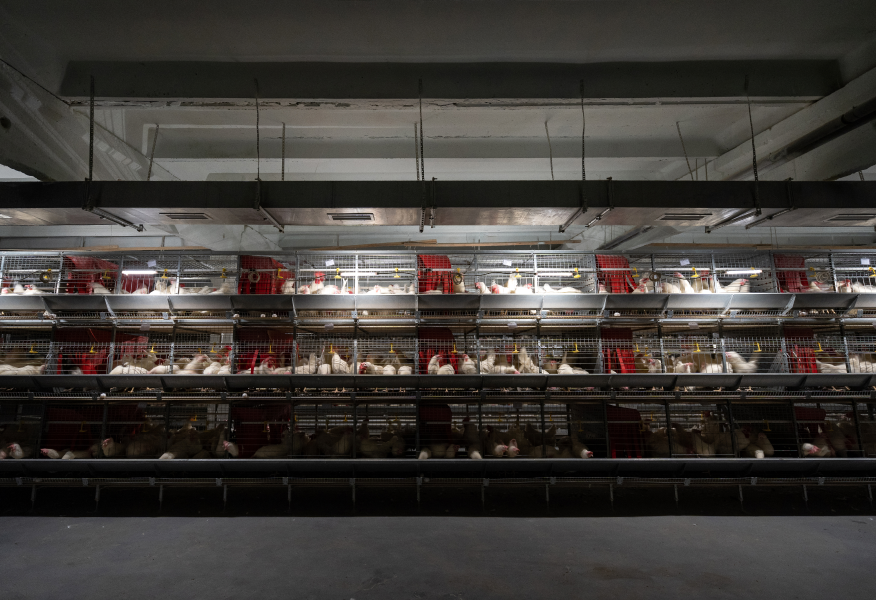
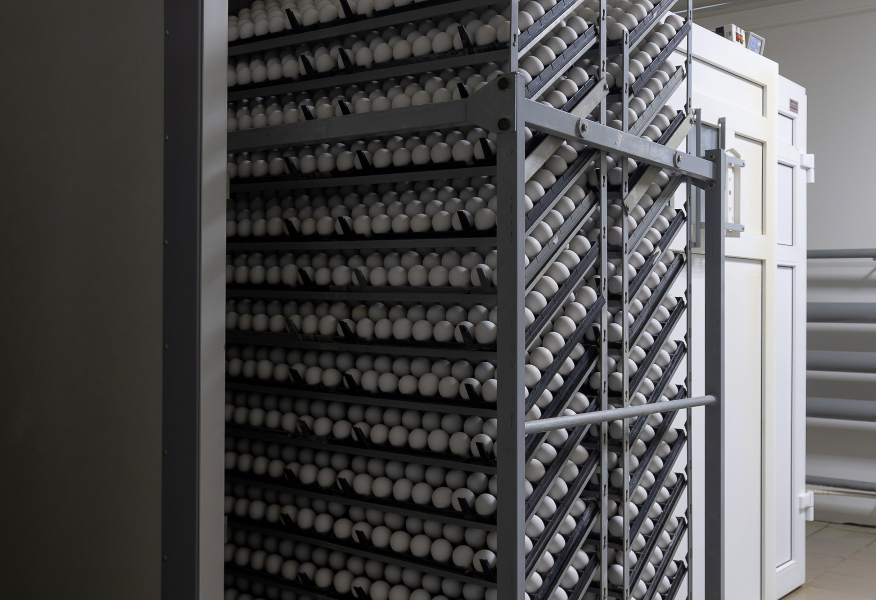
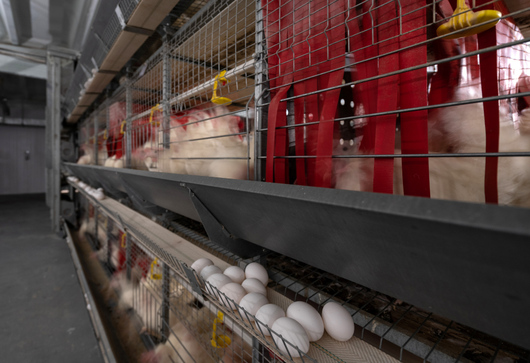

<!--production -->

<section class="section-main section-production">
    <div class="container">
        <div class="section-inner __production-page">
            <div class="main-title-block __common-margin-bottom">
                <h2 class="section-main-title">ПРОИЗВОДСТВО</h2>
            </div>

            <section class="section-content __production-page __first-row-content">
                <div class="text-block __production-page">
                    <p>Питомник “Подмоклово” - уникальное Российское предприятие для производства СПФ-яиц
                        (свободных от специфических патогенных контаминантов или в английской транскрипции SPF eggs –
                        specific pathogen free). СПФ-яйца  являются специальным сырьем для биологической промышленности,
                        а именно производства вирусных вакцин и диагностических препаратов и проведения
                        научно-исследовательских работ в ветеринарной и медицинской вирусологии. </p>

                </div>
                <div class="image-block">
                    <picture class="picture image-block__picture">
                        
                    </picture>
                </div>
            </section>

            <section class="section-content __production-page __section-content-indent">
                <div class="text-block __production-page">
                    <p>Мощности предприятия позволяют удовлетворять потребности различных научных учреждений,
                        медицинской и агробиологической промышленности страны в этом виде сырья. Качество производимых
                        куриных эмбрионов в питомнике “Подмоклово” повышает эффективность научных исследований, а также
                        содействует созданию необходимого уровня биологической безопасности страны в целом.
                        Производство и поставка товара производится в соответствии с утверждённым планом.
                        В собственности питомника “Подмоклово” находится рабочее стадо кур СПФ категории в количестве
                        28500 голов. Доставка товара заказчику осуществляется с помощью собственного, специально
                        подготовленного транспорта (термоконтейнеры, контроль температуры и т. д.)..
                    </p>

                </div>
                <div class="image-block">
                    <picture class="picture image-block__picture">
                        
                    </picture>
                </div>
            </section>

            <section class="section-content __production-page __section-content-indent">
                <div class="text-block __production-page">
                    <p>На предприятии разработана и внедрена система менеджмента качества по стандарту
                        ГОСТ-ISO 9001-2015, с подробным описанием всех производственных процессов, что подтверждено
                        аудитами лицензирующего органа. Общая производственная мощность предприятия 9180000 шт. куриных
                        инкубационных яиц в год. Предприятие полностью укомплектовано специалистами (ветеринарный врач,
                        зоотехник, слесаря-операторы, сотрудники инкубатория, менеджеры по качеству) для обеспечения
                        стабильного производственного процесса, а также контроля качества производимой продукции.
                        Доставка товара заказчику осуществляется с помощью собственного, специально подготовленного
                        транспорта (термоконтейнеры, контроль температуры и т. д.). </p>

                </div>
                <div class="image-block">
                    <picture class="picture image-block__picture">
                        
                    </picture>
                </div>
            </section>
        </div>
    </div>

</section>
<!--production -->

